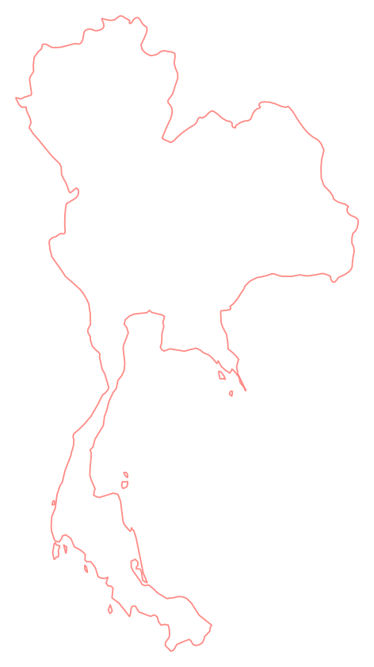

Transparency
Every donation, allocation and confirmed distribution is traceable and accountable, without exposing beneficiaries' private information.
ReliefVue · Brand platform
A transparent, blockchain-powered relief network connecting donors, verified households and humanitarian organizations.
Read the platformProtect aid. Prove every step.
00 / Platform
Vision. A world where humanitarian aid is free from corruption and misuse, where every contribution is accounted for, and where help reaches the people who need it most — fairly, transparently and with dignity.
Mission. To protect humanitarian aid from corruption, fraud and misuse by building a transparent, blockchain-powered relief network that connects donors, verified households and humanitarian organizations.
Through secure identity verification, accountable fund management and human oversight, ReliefVue works to ensure that emergency resources are distributed fairly, efficiently and for their intended purpose.
Every donation, allocation and confirmed distribution is traceable and accountable, without exposing beneficiaries' private information.
Prevent corruption, diversion, duplicate claims, unauthorized spending and abuse of power through enforceable safeguards and independent oversight.
Assistance is based on verified need and eligibility — not nationality, personal connections, favouritism or influence.
Protect people facing emergencies. Technology should make assistance easier to access, not punish legitimate recipients or remove their right to appeal.
Build a globally accessible system where humanitarian organizations, donors and relief operators are held to clear, verifiable standards.
Before distribution. Verify organizers, households, eligibility and official disaster declarations.
During distribution. Prevent unauthorized transfers, double allocations, fund diversion and prohibited purchases through supported payment routes, 2-of-3 approvals and one household = one wallet.
After distribution. Reconcile financial records, investigate discrepancies, support appeals and make verified results auditable.
Blockchain provides verifiable financial records. It cannot independently prove that every real-world claim or purchase was legitimate. That is why ReliefVue also uses KYC, accountable human decision-making, supported payment controls and independent oversight.
The principle that matters most
ReliefVue is not built on the assumption that disaster victims are dishonest. It is built on the belief that humanitarian assistance deserves protection from corruption and abuse at every level, including the people and institutions responsible for managing it.
01 / Product model
Fund the reserve before disaster. After verified impact, review the emergency, verify the household, deliver one fixed grant and trace the confirmed transfer.
Donations build a shared SOL reserve. Households can register ahead.
People check observed impact, official information and local evidence. A weather warning alone does not release funds.
Identity, usual residence and household uniqueness are checked privately. One household = one wallet.
Each approved household receives the fixed grant. Keep SOL or take fiat through a planned provider route.
Confirmed Solana transfers are public. Names, home addresses and documents stay private.
Why Solana
Confirmed donations and grants can be checked on Solana. Names, addresses and eligibility evidence stay private.
Today’s website shows fictional grant outcomes. The custom reserve program is not deployed.
02 / Identity
The selected elephant and open curves carry the brand story. Keep the original artwork intact.

A familiar Thai cue for steadiness and care. Its purple body feels protective; coral brings warmth.
The open curves suggest prepared help reaching a household. They are a metaphor, not a mapped route.

Thailand first
The outline marks the Thailand focus. Demo incident locations appear on a separate map.
03 / Color
Ivory gives the story room. Navy keeps text readable. Purple guides action; coral and lavender add warmth.
#FDFBF7Page#111D2DText#6840B5Action#A78BFAAccent#FF8B86AccentReading rule Use navy on ivory and white on purple for important text. Lavender and coral are accents, not small-text colors.
The v02 review candidate used brighter purple, coral and mint. This guide follows the later selected identity and current website colors.
04 / Typography
Three type roles keep the brand recognisable without making the page busy.
Alegreya Sans Bold
Fraunces
IBM Plex Sans · Thai Looped for Thai
Body copy: at least 18 px on desktop and 16 px on mobile. Use short paragraphs and a comfortable line length.
05 / In use
The current website explains the household need, then offers clear routes to get help or support the reserve.
Relief ready · Thailand first
Prepare relief before disaster. Review requests privately. Trace confirmed fund movements.
Speak plainly. Explain the next step and any review outcome.
Show what is real. Label fictional records; show a signature only for a verified transaction.
Protect people. Keep names, addresses and documents out of public fund records.